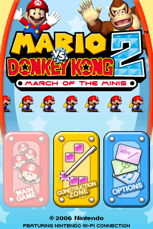
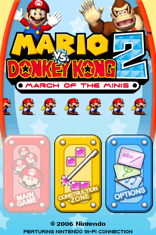

Mario vs. Donkey Kong 2: March of the Minis

Not Complete on 2023-04-27
2 / 5
Release Date: Sep 25, 2006
Meta Score: 76
Screenshots
 

Notes
This is a sequel to a GBA game that I was not super impressed with. However, it has a totally different gameplay style, lemmings-ish control of the mini marios rather than a more traditional puzzle platformer. That meant I gave it a chance to be in the challenge.
Having given it a try, I really was not a fan. Gameplay is pretty boring, poking the mini marios to move around and waiting for them to get where they are going. You have a lot of control over them so you can pretty much do anything with them like a platformer character if you can tap fast enough.
The game has a lot of content (at least 8 worlds x 9 levels) which I was not prepared to slog through.